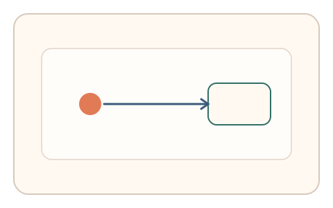
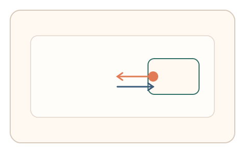
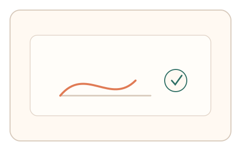

#91
Morphological Analysis - Combination Batches
已扩展
弹性回缩短拖
拖拽到目标后被弹性拉回，用户需二次微调完成，以过冲‑回拉曲线验证真实性。
概念原文
光标拖拽到目标后被系统弹性拉回，用户需二次微调完成，系统评估过冲‑回拉曲线并做异常检测。任务结构为多阶段，信号形态为轨迹动力学。
把“弹性干扰下的纠偏曲线”作为验证信号。
研究背景
弹性回缩引入外部扰动，真实用户会表现出可测的过冲、回拉与微调节奏。脚本难以在非线性扰动下复现自然纠偏曲线。
核心机制
- 用户拖拽目标到指定位置。
- 系统施加弹性回缩，迫使二次微调。
- 记录过冲‑回拉曲线与微调节奏。
- 与基线分布进行比对判定。
用户流程
- 步骤 1：用户拖拽目标进入区域。
- 步骤 2：弹性回缩触发二次微调。
- 步骤 3：系统记录曲线并判定。
判定信号
过冲‑回拉曲线
真实纠偏存在稳定的非线性形态。
微调节奏
人类修正会伴随短暂停顿与回撤。
判定逻辑
曲线形态与节奏需落在人类分布区间；过度平滑或一次完成判异常。
对抗面
- 脚本计算回缩量并一次到位
- 重放真实用户的纠偏轨迹
防御与缓解
- 随机化弹性强度与回缩方向
- 引入轻微噪声降低预测性
- 叠加速度与停顿信号进行多信号判定
可达性与风险
提供较弱弹性或替代任务，避免对手部障碍用户造成负担。
- 弹性过强导致挫败感
- 设备输入延迟影响曲线质量
可视化状态

状态 1：初次拖拽
用户将目标拖入区域。

状态 2：弹性回缩
触发回缩并进行二次微调。

状态 3：曲线判定
根据回拉曲线与节奏判定。
参考资料
Motor learning
说明纠偏与反馈学习机制。
Control theory
说明反馈控制与过冲现象。